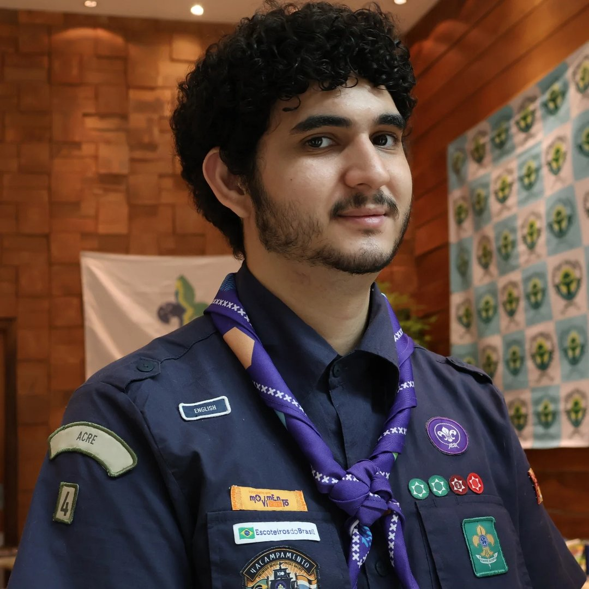
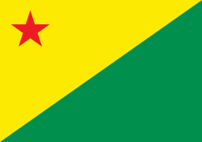

Escoteiro
Foi onde comecei minha trajetória, vivendo aventuras, acampamentos e aprendendo a importância da vida em equipe.
MINHA JORNADA NO MOVIMENTO ESCOTEIRO
Escotismo, liderança, aventura e tecnologia em uma trajetória construída por experiências que continuam moldando quem eu sou.

QUEM SOU EU
Sou integrante do Ramo Pioneiro no Grupo Escoteiro Leôncio de Carvalho, em Rio Branco, Acre, e estudante de Sistemas para Internet no IFAC. O Movimento Escoteiro faz parte da minha formação pessoal, enquanto a tecnologia representa uma das áreas em que quero continuar construindo meu futuro.
Foi onde comecei minha trajetória, vivendo aventuras, acampamentos e aprendendo a importância da vida em equipe.
Uma etapa de desafios maiores, desenvolvimento de autonomia e preparação para novas responsabilidades.
Hoje, sigo remando minha própria canoa e levando comigo tudo o que aprendi ao longo dos ramos anteriores.
EXPLORE
Este site reúne diferentes partes da minha história no Movimento Escoteiro, organizadas para que cada etapa possa ser explorada com calma.
TRAJETÓRIA
Eventos e momentos que marcaram minha caminhada desde a entrada no Movimento Escoteiro.
PROGRESSÃO
Distintivos, progressões e especialidades conquistadas ao longo da minha trajetória.
REGISTROS
Fotografias e lembranças de diferentes momentos vividos no escotismo.
ALÉM DO ESCOTISMO
Estudo Sistemas para Internet e gosto de aproximar aprendizado, criatividade e tecnologia. Entre os assuntos que mais despertam meu interesse estão desenvolvimento web, experiências interativas, realidade virtual e a relação entre sustentabilidade e inovação.
 Movimento Escoteiro
Movimento Escoteiro Ramo Pioneiro
Ramo Pioneiro
Rio Branco • AcreVAMOS CONVERSAR?
Se quiser trocar uma ideia, compartilhar uma experiência ou entrar em contato por algum projeto, pode me enviar uma mensagem.